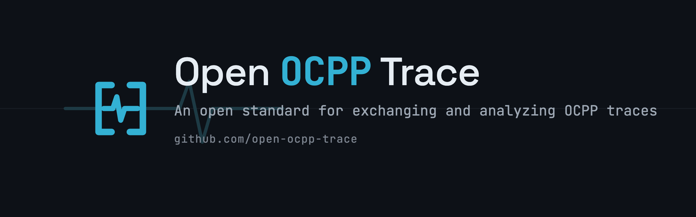

Exchange, store, and analyze OCPP traces in one shared format — so different tools can work with the same data without being tied to any single implementation.
OCPP traces are produced and consumed by many tools — charge point simulators, CSMS test suites, diagnostic utilities, and log analyzers — but each tool captures traces in its own format. This fragmentation makes it hard to move data between tools, reproduce issues across environments, or build shared analysis and conformance tooling.
Open OCPP Trace addresses this by providing a single interchange format that any tool can read and write.
This organization maintains the specification and its supporting material. Tool implementations remain in their own repositories.
The format definition and semantics.
Machine-readable schemas for validation.
Reference traces demonstrating the format.
Checks that verify format compliance.
The specification is being designed in the open, and feedback is welcome. If you build or maintain OCPP tooling, your input on the format and its requirements is especially valuable. Open an issue to discuss use cases, propose changes, or report gaps.